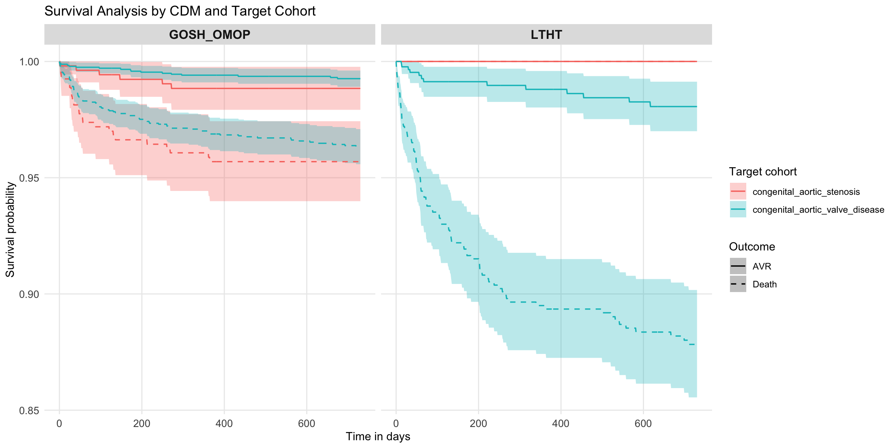

| Table 1: Baseline Demographics and Clinical Characteristics | ||
| Characteristic | Barts Health | GOSH_OMOP |
|---|---|---|
| aortic_insufficiency_congenital | ||
| Number subjects | 67 | 1717 |
| Age | 3.0 (0.0-11.0) | 8.0 (1.0-13.0) |
| Sex: Female | 27 (40.3%) | 621 (36.2%) |
| Sex: Male | 40 (59.7%) | 1096 (63.8%) |
| Days in cohort | 837 (493-1346) | 1172 (597-1802) |
| aortic_stenosis_congenital | ||
| Number subjects | 34 | 591 |
| Age | 5.0 (0.0-12.0) | 7.0 (1.0-12.0) |
| Sex: Female | 13 (38.2%) | 190 (32.1%) |
| Sex: Male | 21 (61.8%) | 401 (67.9%) |
| Days in cohort | 1200 (484-1778) | 1402 (792-1998) |
| aortic_valve_disease | ||
| Number subjects | 125 | NA |
| Age | 5.0 (0.0-15.0) | NA |
| Sex: Female | 50 (40.0%) | NA |
| Sex: Male | 75 (60.0%) | NA |
| Days in cohort | 898 (562-1536) | NA |
| bicuspid_aortic_valve | ||
| Number subjects | NA | 0 |
| unicuspid_aortic_valve | ||
| Number subjects | NA | 0 |
Congenital Aortic Stenosis
Baseline Characteristics
Table 1: Demographics and Clinical Characteristics
Table 2: Pre-Index Comorbidities (Top 10)
| Table 2: Most Common Comorbidities Prior to Index Date | |
| Top 10 conditions per cohort. Format: Database1 | Database2 | |
| Condition | N (%) by Database |
|---|---|
| Aortic Insufficiency Congenital | |
| Heart disease | 21 (1.2%) | 53 (3.1%) |
| Discordant ventriculoarterial connection | 66 (3.8%) |
| Abnormal breathing | 6 (9.0%) | 59 (3.4%) |
| Nausea and vomiting | 6 (9.0%) | 58 (3.4%) |
| Pleural effusion | 54 (3.1%) |
| Gastroesophageal reflux disease without esophagitis | 6 (9.0%) | 45 (2.6%) |
| Sleep apnea | 5 (7.5%) | 45 (2.6%) |
| Secondary hypertension | 44 (2.6%) |
| Tricuspid incompetence, non-rheumatic | 44 (2.6%) |
| Hearing loss | 43 (2.5%) |
| Aortic Stenosis | |
| Cardiomegaly | 49 (8.3%) |
| Heart disease | 21 (3.6%) | 7 (1.2%) |
| Thoracic aortic aneurysm without rupture | 28 (4.7%) |
| Nausea and vomiting | 5 (14.7%) | 12 (2.0%) |
| Abnormal breathing | 16 (2.7%) |
| Pleural effusion | 16 (2.7%) |
| Post cardiac operation functional disturbance | 14 (2.4%) |
| Single live birth from singleton pregnancy | 14 (41.2%) |
| Perinatal cardiovascular disorders | 13 (2.2%) |
| Tricuspid incompetence, non-rheumatic | 13 (2.2%) |
| Aortic Valve Disease | |
| Single live birth from singleton pregnancy | 33 (26.4%) |
| Nausea and vomiting | 10 (8.0%) |
| Bronchiolitis | 9 (7.2%) |
| Gastroesophageal reflux disease without esophagitis | 9 (7.2%) |
| Bacterial sepsis of newborn | 7 (5.6%) |
| Lower respiratory tract infection | 7 (5.6%) |
| Abnormal breathing | 6 (4.8%) |
| Acidosis | 6 (4.8%) |
| Acute lower respiratory tract infection | 6 (4.8%) |
| Neonatal jaundice after preterm delivery | 6 (4.8%) |
Table 3: Index Date Admission Types
| Table 3: Admission Types on Index Date | ||
| Admission Type | Barts Health | GOSH_OMOP |
|---|---|---|
| Aortic Insufficiency Congenital | ||
| Accident due to physical impact or mechanical violence | NA (NA%) | |
| Accidentally struck by or against person or object in sports | NA (NA%) | |
| Allergic disposition | NA (NA%) | |
| Allergy to drug | NA (NA%), NA (NA%) | |
| Approach to organ under fluoroscopy control | NA (NA%) | |
| Arteriotomy approach to organ using image guidance with magnetic resonance imaging control | NA (NA%) | |
| Asthenia | NA (NA%) | |
| At increased risk of venous thromboembolus | NA (NA%) | |
| Car crash | NA (NA%) | |
| Carrier of infectious organism | NA (NA%) | |
| Dietary management surveillance | 12 (17.9%) | |
| Eating / feeding / drinking finding | NA (NA%) | |
| Elevated blood-pressure reading without diagnosis of hypertension | NA (NA%) | |
| Equipment type | NA (NA%) | |
| FH: Cardiovascular disease | NA (NA%) | |
| FH: Respiratory disease | NA (NA%) | |
| Fall from bump against object | NA (NA%) | |
| Fall from playground equipment | NA (NA%) | |
| Fall from slide | NA (NA%) | |
| Family history of clinical finding | NA (NA%) | |
| Family history of consanguinity | NA (NA%) | |
| Family history of diabetes mellitus | NA (NA%) | |
| Family history of infectious disease | NA (NA%) | |
| Family history of metabolic disorder | NA (NA%) | |
| Family history of neurological disorder | NA (NA%) | |
| Finding of general physiological development | 5 (7.5%) | |
| For resuscitation | 31 (46.3%) | |
| Gastrostomy present | 5 (7.5%) | |
| General grades | NA (NA%) | |
| History of event | 8 (11.9%), NA (NA%), NA (NA%), 5 (7.5%), NA (NA%), NA (NA%), 7 (10.4%), NA (NA%), NA (NA%), NA (NA%), NA (NA%), NA (NA%), 5 (7.5%), NA (NA%), NA (NA%), NA (NA%), NA (NA%), NA (NA%), NA (NA%), 12 (17.9%), NA (NA%), NA (NA%), NA (NA%) | |
| Ileostomy present | NA (NA%) | |
| Implantation - action | NA (NA%) | |
| Influenza B virus | NA (NA%) | |
| Inhalation and ingestion of food causing obstruction of respiratory tract or suffocation | NA (NA%) | |
| Intestinal anastomosis present | NA (NA%) | |
| Intravenous nutrition band 1 | NA (NA%) | |
| Learning difficulties | NA (NA%) | |
| Level of consciousness | 15 (22.4%) | |
| Motor vehicle on road in collision with another motor vehicle | NA (NA%) | |
| No matching concept | NA (NA%), 5 (7.5%) | 170 (9.9%), 24 (1.4%), 14 (0.8%), 50 (2.9%), 24 (1.4%), 333 (19.4%), 35 (2.0%), 15 (0.9%), 27 (1.6%), 17 (1.0%), 91 (5.3%) |
| Occupational therapy | NA (NA%) | |
| Passenger in vehicular AND/OR traffic accident | NA (NA%) | |
| Patient encounter procedure | NA (NA%), NA (NA%) | |
| Patient meets COVID-19 laboratory diagnostic criteria | NA (NA%) | |
| Position of body and posture | NA (NA%) | |
| Procedure not done | NA (NA%), NA (NA%) | |
| Procedure type | NA (NA%) | |
| Pulmonary aspiration of gastric contents | NA (NA%) | |
| Pupil reaction | 6 (9.0%) | |
| Reason for procedure delay | NA (NA%) | |
| Respiratory effort | 38 (56.7%) | |
| Speech therapy | 6 (9.0%) | |
| Transplanted heart valve present | NA (NA%) | |
| Via femoral artery | NA (NA%) | |
| Emergency hospital admission | 115 (6.7%), 40 (2.3%) | |
| Non-urgent surgical admission | 173 (10.1%), 50 (2.9%) | |
| Planned admission | 387 (22.5%), 119 (6.9%), 143 (8.3%) | |
| Aortic Stenosis | ||
| Abnormal weight loss | NA (NA%) | |
| Allergic disposition | NA (NA%) | |
| Carrier of infectious organism | NA (NA%) | |
| Dietary management surveillance | NA (NA%) | |
| FH: Respiratory disease | NA (NA%) | |
| Family history of consanguinity | NA (NA%) | |
| Family history of diabetes mellitus | NA (NA%) | |
| Family history of infectious disease | NA (NA%) | |
| Family history of neurological disorder | NA (NA%) | |
| Finding of general physiological development | NA (NA%) | |
| For resuscitation | 17 (50.0%) | |
| Gastrostomy present | NA (NA%) | |
| General grades | NA (NA%) | |
| History of event | NA (NA%), NA (NA%), NA (NA%), NA (NA%), NA (NA%), NA (NA%), NA (NA%), NA (NA%), NA (NA%), NA (NA%) | |
| Intravenous nutrition band 1 | NA (NA%) | |
| Level of consciousness | NA (NA%) | |
| No matching concept | NA (NA%), NA (NA%), NA (NA%), NA (NA%) | 81 (13.7%), 10 (1.7%), 13 (2.2%), 12 (2.0%), 11 (1.9%), 8 (1.4%), 152 (25.7%), 42 (7.1%), NA (NA%), 7 (1.2%), 24 (4.1%), NA (NA%) |
| Patient encounter procedure | NA (NA%) | |
| Position of body and posture | NA (NA%) | |
| Problem situation relating to social and personal history | NA (NA%) | |
| Procedure not done | NA (NA%) | |
| Procedure type | NA (NA%) | |
| Reason for procedure delay | NA (NA%) | |
| Respiratory effort | 17 (50.0%) | |
| Speech therapy | NA (NA%) | |
| Admission to surgical department | 5 (0.8%) | |
| Emergency hospital admission | 8 (1.4%), 52 (8.8%) | |
| Non-urgent surgical admission | 31 (5.2%), 10 (1.7%) | |
| Planned admission | NA (NA%), 109 (18.4%), 50 (8.5%), 26 (4.4%) | |
| Aortic Valve Disease | ||
| Abnormal weight loss | NA (NA%) | |
| Accidental physical contact | NA (NA%) | |
| Allergic disposition | 7 (5.6%) | |
| Allergy to drug | NA (NA%), NA (NA%), NA (NA%) | |
| Approach to organ under fluoroscopy control | NA (NA%) | |
| Arteriotomy approach to organ using image guidance with magnetic resonance imaging control | NA (NA%) | |
| Asthenia | NA (NA%) | |
| At increased risk of venous thromboembolus | NA (NA%) | |
| Body mass index 30+ - obesity | NA (NA%) | |
| Body mass index 40+ - severely obese | NA (NA%) | |
| Carrier of infectious organism | NA (NA%), NA (NA%) | |
| Dependence on renal dialysis | NA (NA%) | |
| Dietary management surveillance | 20 (16.0%) | |
| Eating / feeding / drinking finding | NA (NA%) | |
| Equipment type | NA (NA%) | |
| FH: Cardiovascular disease | NA (NA%) | |
| FH: Respiratory disease | NA (NA%) | |
| Fall from bump against object | NA (NA%) | |
| Fall from playground equipment | NA (NA%) | |
| Family history of clinical finding | NA (NA%) | |
| Family history of consanguinity | NA (NA%) | |
| Family history of diabetes mellitus | NA (NA%) | |
| Family history of infectious disease | NA (NA%) | |
| Family history of metabolic disorder | NA (NA%) | |
| Family history of neurological disorder | NA (NA%) | |
| Finding of general physiological development | 8 (6.4%) | |
| For resuscitation | 55 (44.0%) | |
| Gastrostomy present | NA (NA%) | |
| General grades | 10 (8.0%) | |
| Healthcare services | NA (NA%) | |
| History of event | 9 (7.2%), NA (NA%), NA (NA%), 6 (4.8%), NA (NA%), NA (NA%), 7 (5.6%), NA (NA%), NA (NA%), 5 (4.0%), 7 (5.6%), NA (NA%), 9 (7.2%), NA (NA%), NA (NA%), NA (NA%), NA (NA%), NA (NA%), NA (NA%), NA (NA%), 12 (9.6%), NA (NA%), NA (NA%), NA (NA%) | |
| Hospital admission, emergency, direct | NA (NA%) | |
| Housing problem | NA (NA%) | |
| Ileostomy present | NA (NA%) | |
| Implantation - action | NA (NA%) | |
| Influenza B virus | NA (NA%) | |
| Inhalation and ingestion of food causing obstruction of respiratory tract or suffocation | NA (NA%) | |
| Intravenous nutrition band 1 | 5 (4.0%) | |
| Learning difficulties | NA (NA%) | |
| Level of consciousness | 20 (16.0%) | |
| Malaise and fatigue | NA (NA%) | |
| Motor vehicle accident off public road | NA (NA%) | |
| Motorcycle accident | NA (NA%) | |
| Multiple drug-resistant Citrobacter freundii | NA (NA%) | |
| No matching concept | NA (NA%), NA (NA%), NA (NA%), 8 (6.4%), NA (NA%), NA (NA%) | |
| Occupational therapy | 5 (4.0%) | |
| Patient encounter procedure | 9 (7.2%), NA (NA%) | |
| Patient meets COVID-19 laboratory diagnostic criteria | NA (NA%) | |
| Position of body and posture | 10 (8.0%) | |
| Problem situation relating to social and personal history | NA (NA%), NA (NA%) | |
| Procedure not done | NA (NA%), NA (NA%) | |
| Procedure type | 10 (8.0%) | |
| Pulmonary aspiration of gastric contents | NA (NA%) | |
| Pupil reaction | 5 (4.0%) | |
| Reason for procedure delay | 10 (8.0%) | |
| Respiratory effort | 59 (47.2%) | |
| Speech therapy | 10 (8.0%) | |
| Transplanted heart valve present | NA (NA%) | |
| Transplanted kidney present | NA (NA%) | |
| Via femoral artery | NA (NA%) | |
| Victim, motorcycle rider in vehicular AND/OR traffic accident | NA (NA%) | |
Table 4: Index Date Procedures (Top 10)
| Table 4: Most Common Procedures on Index Date | |
| Top 10 procedures per cohort. Format: Database1 | Database2 | |
| Procedure | N (%) by Database |
|---|---|
| Aortic Insufficiency Congenital | |
| Transthoracic echocardiography | 6 (9.0%) | 861 (50.1%) | 1006 (58.6%) |
| Radiology of one body area or <20 minutes | 6 (9.0%) | 591 (34.4%) |
| Plain X-ray of chest | 267 (15.6%) | 23 (1.3%) |
| Administration of inhalation anesthetic using endotracheal tube | 255 (14.9%) |
| MRI study for cardiac congenital anomaly | 218 (12.7%) |
| Other specified diagnostic electrocardiography | 217 (12.6%) |
| Cardiac MRI | 216 (12.6%) |
| Administration of anesthesia | 209 (12.2%) |
| Radiology with pre and post contrast | 199 (11.6%) |
| Transesophageal echocardiography | 82 (4.8%) | 86 (5.0%) |
| Aortic Stenosis | |
| Cardiac MRI | 86 (14.6%) |
| MRI study for cardiac congenital anomaly | 83 (14.0%) |
| Other specified diagnostic electrocardiography | 82 (13.9%) |
| Radiology with pre and post contrast | 78 (13.2%) |
| Plain X-ray of chest | 67 (11.3%) | 7 (1.2%) |
| oxygen | 47 (8.0%) |
| Administration of inhalation anesthetic using endotracheal tube | 41 (6.9%) |
| Administration of anesthesia | 40 (6.8%) |
| Cardiopulmonary exercise test | 32 (5.4%) |
| Transesophageal echocardiography | 15 (2.5%) | 15 (2.5%) |
| Aortic Valve Disease | |
| Insertion of nasogastric tube | 13 (10.4%) |
| Physical therapy procedure | 11 (8.8%) |
| Administration of prophylactic antibiotic | 10 (8.0%) |
| Radiology of one body area or <20 minutes | 9 (7.2%) |
| Transthoracic echocardiography | 8 (6.4%) |
| Local anesthesia, by infiltration | 6 (4.8%) |
| Umbilical vessel catheterization | 6 (4.8%) |
| Active cooling of patient | NA (NA%) |
| Approach to organ under ultrasonic control | NA (NA%) |
| Bilateral operation | NA (NA%) |
Table 5: Index Date Medications (Top 10)
| Table 5: Most Common Medications on Index Date | |
| Top 10 medications per cohort. Format: Database1 | Database2 | |
| Medication | N (%) by Database |
|---|---|
| Aortic Insufficiency Congenital | |
| fentanyl | 184 (10.7%) |
| acetaminophen | 180 (10.5%) |
| morphine | 15 (0.9%) | 157 (9.1%) |
| sodium chloride | 133 (7.7%) |
| heparin | 116 (6.8%) |
| propofol | 114 (6.6%) |
| floxacillin | 107 (6.2%) |
| phenylephrine | 107 (6.2%) |
| tranexamic acid | 98 (5.7%) |
| ondansetron | 96 (5.6%) |
| Aortic Stenosis | |
| morphine | 5 (0.8%) | 36 (6.1%) |
| fentanyl | 40 (6.8%) |
| glucose | 32 (5.4%) |
| acetaminophen | 24 (4.1%) |
| sodium chloride | 24 (4.1%) |
| heparin | 21 (3.6%) |
| sodium bicarbonate | 21 (3.6%) |
| midazolam | 20 (3.4%) |
| phenylephrine | 20 (3.4%) |
| dinoprostone | 19 (3.2%) |
| Aortic Valve Disease | |
| Surgical swab | 9 (7.2%) |
| Intermittent pneumatic compression device | 5 (4.0%) |
| Cotton wool ball | NA (NA%) |
| Cotton wool pledget | NA (NA%) |
| Hypodermic needle | NA (NA%) |
| Oral care swab, sterile | NA (NA%) |
| Surgical blade | NA (NA%) |
| Suture needle | NA (NA%) |
Table 6: Follow-up Period Events (Top 10)
| Table 6: Most Common Events During Follow-up Period | ||
| Top 10 conditions and procedures per cohort. Format: Database1 | Database2 | ||
| Event Type | Event | N (%) by Database |
|---|---|---|
| Aortic Insufficiency Congenital | ||
| Condition | Congenital insufficiency of aortic valve | 12 (17.9%) | 1156 (67.3%) |
| Condition | Aortic valve regurgitation | 7 (10.4%) | 576 (33.5%) |
| Condition | Congenital stenosis of aortic valve | 274 (16.0%) |
| Condition | Nausea and vomiting | 8 (11.9%) | 184 (10.7%) |
| Condition | Secondary hypertension | 170 (9.9%) | 11 (0.6%) |
| Condition | Post cardiac operation functional disturbance | 178 (10.4%) |
| Condition | Sleep apnea | 5 (7.5%) | 96 (5.6%) |
| Condition | Gastroesophageal reflux disease without esophagitis | 10 (14.9%) | 90 (5.2%) |
| Condition | Aortic valve stenosis | 99 (5.8%) |
| Condition | Chronic adhesive pericarditis | 93 (5.4%) |
| Procedure | Transthoracic echocardiography | 21 (31.3%) | 1253 (73.0%) | 1263 (73.6%) |
| Procedure | Radiology of one body area or <20 minutes | 24 (35.8%) | 938 (54.6%) |
| Procedure | Plain X-ray of chest | 584 (34.0%) | 177 (10.3%) |
| Procedure | Other specified diagnostic electrocardiography | 677 (39.4%) |
| Procedure | Administration of inhalation anesthetic using endotracheal tube | 628 (36.6%) |
| Procedure | Administration of anesthesia | 585 (34.1%) |
| Procedure | Right sided operation | 10 (14.9%) | 474 (27.6%) |
| Procedure | oxygen | 9 (0.5%) | 342 (19.9%) | 15 (0.9%) | 43 (2.5%) | 11 (0.6%) |
| Procedure | Approach to organ under ultrasonic control | 5 (7.5%) | 316 (18.4%) |
| Procedure | Removal of endotracheal tube | 293 (17.1%) |
| Aortic Stenosis | ||
| Condition | Thoracic aortic aneurysm without rupture | 168 (28.4%) |
| Condition | Atrial septal defect | 102 (17.3%) |
| Condition | Pleural effusion | 102 (17.3%) |
| Condition | Aortic valve regurgitation | 95 (16.1%) |
| Condition | Heart disease | 19 (3.2%) | 74 (12.5%) |
| Condition | Pneumothorax | 75 (12.7%) |
| Condition | Tricuspid incompetence, non-rheumatic | 69 (11.7%) |
| Condition | Atelectasis | 68 (11.5%) |
| Condition | Post cardiac operation functional disturbance | 68 (11.5%) |
| Condition | Secondary hypertension | 58 (9.8%) | 7 (1.2%) |
| Procedure | Transthoracic echocardiography | 6 (17.6%) | 449 (76.0%) | 454 (76.8%) |
| Procedure | Radiology of one body area or <20 minutes | 6 (17.6%) | 334 (56.5%) |
| Procedure | Plain X-ray of chest | 228 (38.6%) | 104 (17.6%) |
| Procedure | Transesophageal echocardiography | 140 (23.7%) | 140 (23.7%) |
| Procedure | Administration of inhalation anesthetic using endotracheal tube | 243 (41.1%) |
| Procedure | Other specified diagnostic electrocardiography | 238 (40.3%) |
| Procedure | Administration of anesthesia | 228 (38.6%) |
| Procedure | oxygen | 173 (29.3%) | 19 (3.2%) | 10 (1.7%) |
| Procedure | Temporary operation | 148 (25.0%) |
| Procedure | Removal of endotracheal tube | 131 (22.2%) |
| Aortic Valve Disease | ||
| Condition | No abnormality detected | 18 (14.4%) |
| Condition | Congenital insufficiency of aortic valve | 16 (12.8%) |
| Condition | Lower respiratory tract infection | 14 (11.2%) |
| Condition | Gastroesophageal reflux disease without esophagitis | 13 (10.4%) |
| Condition | COVID-19 | 6 (4.8%) | 6 (4.8%) |
| Condition | Nausea and vomiting | 12 (9.6%) |
| Condition | Aortic valve stenosis | 5 (4.0%) | 5 (4.0%) |
| Condition | Acute lower respiratory tract infection | 9 (7.2%) |
| Condition | Extracellular fluid volume depletion | 9 (7.2%) |
| Condition | Upper respiratory infection | 9 (7.2%) |
| Procedure | Radiology of one body area or <20 minutes | 36 (28.8%) |
| Procedure | Transthoracic echocardiography | 31 (24.8%) |
| Procedure | Continuous positive airway pressure ventilation treatment | 14 (11.2%) |
| Procedure | Local anesthesia, by infiltration | 14 (11.2%) |
| Procedure | Right sided operation | 14 (11.2%) |
| Procedure | Electroencephalogram | 12 (9.6%) |
| Procedure | Physical therapy procedure | 11 (8.8%) |
| Procedure | Radiology with post contrast | 11 (8.8%) |
| Procedure | Left sided operation | 10 (8.0%) |
| Procedure | MRI of head | 9 (7.2%) |
## Survival Analysis Results
### Summary Table
::: {.cell}
::: {.cell-output-display}
```{=html}
<div id="xfofoynyhm" style="padding-left:0px;padding-right:0px;padding-top:10px;padding-bottom:10px;overflow-x:auto;overflow-y:auto;width:auto;height:auto;">
<style>#xfofoynyhm table {
font-family: system-ui, 'Segoe UI', Roboto, Helvetica, Arial, sans-serif, 'Apple Color Emoji', 'Segoe UI Emoji', 'Segoe UI Symbol', 'Noto Color Emoji';
-webkit-font-smoothing: antialiased;
-moz-osx-font-smoothing: grayscale;
}
#xfofoynyhm thead, #xfofoynyhm tbody, #xfofoynyhm tfoot, #xfofoynyhm tr, #xfofoynyhm td, #xfofoynyhm th {
border-style: none;
}
#xfofoynyhm p {
margin: 0;
padding: 0;
}
#xfofoynyhm .gt_table {
display: table;
border-collapse: collapse;
line-height: normal;
margin-left: auto;
margin-right: auto;
color: #333333;
font-size: 12px;
font-weight: normal;
font-style: normal;
background-color: #FFFFFF;
width: auto;
border-top-style: solid;
border-top-width: 2px;
border-top-color: #A8A8A8;
border-right-style: none;
border-right-width: 2px;
border-right-color: #D3D3D3;
border-bottom-style: solid;
border-bottom-width: 2px;
border-bottom-color: #A8A8A8;
border-left-style: none;
border-left-width: 2px;
border-left-color: #D3D3D3;
}
#xfofoynyhm .gt_caption {
padding-top: 4px;
padding-bottom: 4px;
}
#xfofoynyhm .gt_title {
color: #333333;
font-size: 125%;
font-weight: initial;
padding-top: 4px;
padding-bottom: 4px;
padding-left: 5px;
padding-right: 5px;
border-bottom-color: #FFFFFF;
border-bottom-width: 0;
}
#xfofoynyhm .gt_subtitle {
color: #333333;
font-size: 85%;
font-weight: initial;
padding-top: 3px;
padding-bottom: 5px;
padding-left: 5px;
padding-right: 5px;
border-top-color: #FFFFFF;
border-top-width: 0;
}
#xfofoynyhm .gt_heading {
background-color: #FFFFFF;
text-align: left;
border-bottom-color: #FFFFFF;
border-left-style: none;
border-left-width: 1px;
border-left-color: #D3D3D3;
border-right-style: none;
border-right-width: 1px;
border-right-color: #D3D3D3;
}
#xfofoynyhm .gt_bottom_border {
border-bottom-style: solid;
border-bottom-width: 2px;
border-bottom-color: #D3D3D3;
}
#xfofoynyhm .gt_col_headings {
border-top-style: solid;
border-top-width: 2px;
border-top-color: #D3D3D3;
border-bottom-style: solid;
border-bottom-width: 2px;
border-bottom-color: #D3D3D3;
border-left-style: none;
border-left-width: 1px;
border-left-color: #D3D3D3;
border-right-style: none;
border-right-width: 1px;
border-right-color: #D3D3D3;
}
#xfofoynyhm .gt_col_heading {
color: #333333;
background-color: #FFFFFF;
font-size: 100%;
font-weight: normal;
text-transform: inherit;
border-left-style: none;
border-left-width: 1px;
border-left-color: #D3D3D3;
border-right-style: none;
border-right-width: 1px;
border-right-color: #D3D3D3;
vertical-align: bottom;
padding-top: 5px;
padding-bottom: 6px;
padding-left: 5px;
padding-right: 5px;
overflow-x: hidden;
}
#xfofoynyhm .gt_column_spanner_outer {
color: #333333;
background-color: #FFFFFF;
font-size: 100%;
font-weight: normal;
text-transform: inherit;
padding-top: 0;
padding-bottom: 0;
padding-left: 4px;
padding-right: 4px;
}
#xfofoynyhm .gt_column_spanner_outer:first-child {
padding-left: 0;
}
#xfofoynyhm .gt_column_spanner_outer:last-child {
padding-right: 0;
}
#xfofoynyhm .gt_column_spanner {
border-bottom-style: solid;
border-bottom-width: 2px;
border-bottom-color: #D3D3D3;
vertical-align: bottom;
padding-top: 5px;
padding-bottom: 5px;
overflow-x: hidden;
display: inline-block;
width: 100%;
}
#xfofoynyhm .gt_spanner_row {
border-bottom-style: hidden;
}
#xfofoynyhm .gt_group_heading {
padding-top: 8px;
padding-bottom: 8px;
padding-left: 5px;
padding-right: 5px;
color: #333333;
background-color: #FFFFFF;
font-size: 100%;
font-weight: initial;
text-transform: inherit;
border-top-style: solid;
border-top-width: 2px;
border-top-color: #D3D3D3;
border-bottom-style: solid;
border-bottom-width: 2px;
border-bottom-color: #D3D3D3;
border-left-style: none;
border-left-width: 1px;
border-left-color: #D3D3D3;
border-right-style: none;
border-right-width: 1px;
border-right-color: #D3D3D3;
vertical-align: middle;
text-align: left;
}
#xfofoynyhm .gt_empty_group_heading {
padding: 0.5px;
color: #333333;
background-color: #FFFFFF;
font-size: 100%;
font-weight: initial;
border-top-style: solid;
border-top-width: 2px;
border-top-color: #D3D3D3;
border-bottom-style: solid;
border-bottom-width: 2px;
border-bottom-color: #D3D3D3;
vertical-align: middle;
}
#xfofoynyhm .gt_from_md > :first-child {
margin-top: 0;
}
#xfofoynyhm .gt_from_md > :last-child {
margin-bottom: 0;
}
#xfofoynyhm .gt_row {
padding-top: 8px;
padding-bottom: 8px;
padding-left: 5px;
padding-right: 5px;
margin: 10px;
border-top-style: solid;
border-top-width: 1px;
border-top-color: #D3D3D3;
border-left-style: none;
border-left-width: 1px;
border-left-color: #D3D3D3;
border-right-style: none;
border-right-width: 1px;
border-right-color: #D3D3D3;
vertical-align: middle;
overflow-x: hidden;
}
#xfofoynyhm .gt_stub {
color: #333333;
background-color: #FFFFFF;
font-size: 100%;
font-weight: initial;
text-transform: inherit;
border-right-style: solid;
border-right-width: 2px;
border-right-color: #D3D3D3;
padding-left: 5px;
padding-right: 5px;
}
#xfofoynyhm .gt_stub_row_group {
color: #333333;
background-color: #FFFFFF;
font-size: 100%;
font-weight: initial;
text-transform: inherit;
border-right-style: solid;
border-right-width: 2px;
border-right-color: #D3D3D3;
padding-left: 5px;
padding-right: 5px;
vertical-align: top;
}
#xfofoynyhm .gt_row_group_first td {
border-top-width: 2px;
}
#xfofoynyhm .gt_row_group_first th {
border-top-width: 2px;
}
#xfofoynyhm .gt_summary_row {
color: #333333;
background-color: #FFFFFF;
text-transform: inherit;
padding-top: 8px;
padding-bottom: 8px;
padding-left: 5px;
padding-right: 5px;
}
#xfofoynyhm .gt_first_summary_row {
border-top-style: solid;
border-top-color: #D3D3D3;
}
#xfofoynyhm .gt_first_summary_row.thick {
border-top-width: 2px;
}
#xfofoynyhm .gt_last_summary_row {
padding-top: 8px;
padding-bottom: 8px;
padding-left: 5px;
padding-right: 5px;
border-bottom-style: solid;
border-bottom-width: 2px;
border-bottom-color: #D3D3D3;
}
#xfofoynyhm .gt_grand_summary_row {
color: #333333;
background-color: #FFFFFF;
text-transform: inherit;
padding-top: 8px;
padding-bottom: 8px;
padding-left: 5px;
padding-right: 5px;
}
#xfofoynyhm .gt_first_grand_summary_row {
padding-top: 8px;
padding-bottom: 8px;
padding-left: 5px;
padding-right: 5px;
border-top-style: double;
border-top-width: 6px;
border-top-color: #D3D3D3;
}
#xfofoynyhm .gt_last_grand_summary_row_top {
padding-top: 8px;
padding-bottom: 8px;
padding-left: 5px;
padding-right: 5px;
border-bottom-style: double;
border-bottom-width: 6px;
border-bottom-color: #D3D3D3;
}
#xfofoynyhm .gt_striped {
background-color: rgba(128, 128, 128, 0.05);
}
#xfofoynyhm .gt_table_body {
border-top-style: solid;
border-top-width: 2px;
border-top-color: #D3D3D3;
border-bottom-style: solid;
border-bottom-width: 2px;
border-bottom-color: #D3D3D3;
}
#xfofoynyhm .gt_footnotes {
color: #333333;
background-color: #FFFFFF;
border-bottom-style: none;
border-bottom-width: 2px;
border-bottom-color: #D3D3D3;
border-left-style: none;
border-left-width: 2px;
border-left-color: #D3D3D3;
border-right-style: none;
border-right-width: 2px;
border-right-color: #D3D3D3;
}
#xfofoynyhm .gt_footnote {
margin: 0px;
font-size: 90%;
padding-top: 4px;
padding-bottom: 4px;
padding-left: 5px;
padding-right: 5px;
}
#xfofoynyhm .gt_sourcenotes {
color: #333333;
background-color: #FFFFFF;
border-bottom-style: none;
border-bottom-width: 2px;
border-bottom-color: #D3D3D3;
border-left-style: none;
border-left-width: 2px;
border-left-color: #D3D3D3;
border-right-style: none;
border-right-width: 2px;
border-right-color: #D3D3D3;
}
#xfofoynyhm .gt_sourcenote {
font-size: 90%;
padding-top: 4px;
padding-bottom: 4px;
padding-left: 5px;
padding-right: 5px;
}
#xfofoynyhm .gt_left {
text-align: left;
}
#xfofoynyhm .gt_center {
text-align: center;
}
#xfofoynyhm .gt_right {
text-align: right;
font-variant-numeric: tabular-nums;
}
#xfofoynyhm .gt_font_normal {
font-weight: normal;
}
#xfofoynyhm .gt_font_bold {
font-weight: bold;
}
#xfofoynyhm .gt_font_italic {
font-style: italic;
}
#xfofoynyhm .gt_super {
font-size: 65%;
}
#xfofoynyhm .gt_footnote_marks {
font-size: 75%;
vertical-align: 0.4em;
position: initial;
}
#xfofoynyhm .gt_asterisk {
font-size: 100%;
vertical-align: 0;
}
#xfofoynyhm .gt_indent_1 {
text-indent: 5px;
}
#xfofoynyhm .gt_indent_2 {
text-indent: 10px;
}
#xfofoynyhm .gt_indent_3 {
text-indent: 15px;
}
#xfofoynyhm .gt_indent_4 {
text-indent: 20px;
}
#xfofoynyhm .gt_indent_5 {
text-indent: 25px;
}
#xfofoynyhm .katex-display {
display: inline-flex !important;
margin-bottom: 0.75em !important;
}
#xfofoynyhm div.Reactable > div.rt-table > div.rt-thead > div.rt-tr.rt-tr-group-header > div.rt-th-group:after {
height: 0px !important;
}
</style>
<table class="gt_table" data-quarto-disable-processing="false" data-quarto-bootstrap="false">
<thead>
<tr class="gt_heading">
<td colspan="6" class="gt_heading gt_title gt_font_normal gt_bottom_border" style>Survival Analysis Results</td>
</tr>
<tr class="gt_col_headings">
<th class="gt_col_heading gt_columns_bottom_border gt_left" rowspan="1" colspan="1" style="background-color: #F0F0F0;" scope="col" id="CDM-name">CDM name</th>
<th class="gt_col_heading gt_columns_bottom_border gt_left" rowspan="1" colspan="1" style="background-color: #F0F0F0;" scope="col" id="Target-cohort">Target cohort</th>
<th class="gt_col_heading gt_columns_bottom_border gt_left" rowspan="1" colspan="1" style="background-color: #F0F0F0;" scope="col" id="Outcome-name">Outcome name</th>
<th class="gt_col_heading gt_columns_bottom_border gt_center" rowspan="1" colspan="1" style="background-color: #F0F0F0;" scope="col" id="Number-events">Number events</th>
<th class="gt_col_heading gt_columns_bottom_border gt_center" rowspan="1" colspan="1" style="background-color: #F0F0F0;" scope="col" id="Median-survival-(95%-CI)">Median survival (95% CI)</th>
<th class="gt_col_heading gt_columns_bottom_border gt_center" rowspan="1" colspan="1" style="background-color: #F0F0F0;" scope="col" id="Restricted-mean-survival-(95%-CI)">Restricted mean survival (95% CI)</th>
</tr>
</thead>
<tbody class="gt_table_body">
<tr><td headers="CDM name" class="gt_row gt_left" style="border-left-width: 1px; border-left-style: solid; border-left-color: #D3D3D3; border-right-width: 1px; border-right-style: solid; border-right-color: #D3D3D3; border-top-width: 1px; border-top-style: solid; border-top-color: #D3D3D3; border-bottom-width: 1px; border-bottom-style: solid; border-bottom-color: #D3D3D3;">Barts Health</td>
<td headers="Target cohort" class="gt_row gt_left" style="border-left-width: 1px; border-left-style: solid; border-left-color: #D3D3D3; border-right-width: 1px; border-right-style: solid; border-right-color: #D3D3D3; border-top-width: 1px; border-top-style: solid; border-top-color: #D3D3D3; border-bottom-width: 1px; border-bottom-style: solid; border-bottom-color: #D3D3D3;">aortic_insufficiency_congenital</td>
<td headers="Outcome name" class="gt_row gt_left" style="border-left-width: 1px; border-left-style: solid; border-left-color: #D3D3D3; border-right-width: 1px; border-right-style: solid; border-right-color: #D3D3D3; border-top-width: 1px; border-top-style: solid; border-top-color: #D3D3D3; border-bottom-width: 1px; border-bottom-style: solid; border-bottom-color: #D3D3D3;">aortic_valve_replacement</td>
<td headers="Number events" class="gt_row gt_center" style="border-left-width: 1px; border-left-style: solid; border-left-color: #D3D3D3; border-right-width: 1px; border-right-style: solid; border-right-color: #D3D3D3; border-top-width: 1px; border-top-style: solid; border-top-color: #D3D3D3; border-bottom-width: 1px; border-bottom-style: solid; border-bottom-color: #D3D3D3;">NA</td>
<td headers="Median survival (95% CI)" class="gt_row gt_center" style="border-left-width: 1px; border-left-style: solid; border-left-color: #D3D3D3; border-right-width: 1px; border-right-style: solid; border-right-color: #D3D3D3; border-top-width: 1px; border-top-style: solid; border-top-color: #D3D3D3; border-bottom-width: 1px; border-bottom-style: solid; border-bottom-color: #D3D3D3;">–</td>
<td headers="Restricted mean survival (95% CI)" class="gt_row gt_center" style="border-left-width: 1px; border-left-style: solid; border-left-color: #D3D3D3; border-right-width: 1px; border-right-style: solid; border-right-color: #D3D3D3; border-top-width: 1px; border-top-style: solid; border-top-color: #D3D3D3; border-bottom-width: 1px; border-bottom-style: solid; border-bottom-color: #D3D3D3;">NA</td></tr>
<tr><td headers="CDM name" class="gt_row gt_left" style="border-left-width: 1px; border-left-style: solid; border-left-color: #D3D3D3; border-right-width: 1px; border-right-style: solid; border-right-color: #D3D3D3; border-top-width: 1px; border-top-style: solid; border-top-color: #D3D3D3; border-bottom-width: 1px; border-bottom-style: solid; border-bottom-color: #D3D3D3;">Barts Health</td>
<td headers="Target cohort" class="gt_row gt_left" style="border-left-width: 1px; border-left-style: solid; border-left-color: #D3D3D3; border-right-width: 1px; border-right-style: solid; border-right-color: #D3D3D3; border-top-width: 1px; border-top-style: solid; border-top-color: #D3D3D3; border-bottom-width: 1px; border-bottom-style: solid; border-bottom-color: #D3D3D3;">aortic_insufficiency_congenital</td>
<td headers="Outcome name" class="gt_row gt_left" style="border-left-width: 1px; border-left-style: solid; border-left-color: #D3D3D3; border-right-width: 1px; border-right-style: solid; border-right-color: #D3D3D3; border-top-width: 1px; border-top-style: solid; border-top-color: #D3D3D3; border-bottom-width: 1px; border-bottom-style: solid; border-bottom-color: #D3D3D3;">death_cohort</td>
<td headers="Number events" class="gt_row gt_center" style="border-left-width: 1px; border-left-style: solid; border-left-color: #D3D3D3; border-right-width: 1px; border-right-style: solid; border-right-color: #D3D3D3; border-top-width: 1px; border-top-style: solid; border-top-color: #D3D3D3; border-bottom-width: 1px; border-bottom-style: solid; border-bottom-color: #D3D3D3;">NA</td>
<td headers="Median survival (95% CI)" class="gt_row gt_center" style="border-left-width: 1px; border-left-style: solid; border-left-color: #D3D3D3; border-right-width: 1px; border-right-style: solid; border-right-color: #D3D3D3; border-top-width: 1px; border-top-style: solid; border-top-color: #D3D3D3; border-bottom-width: 1px; border-bottom-style: solid; border-bottom-color: #D3D3D3;">–</td>
<td headers="Restricted mean survival (95% CI)" class="gt_row gt_center" style="border-left-width: 1px; border-left-style: solid; border-left-color: #D3D3D3; border-right-width: 1px; border-right-style: solid; border-right-color: #D3D3D3; border-top-width: 1px; border-top-style: solid; border-top-color: #D3D3D3; border-bottom-width: 1px; border-bottom-style: solid; border-bottom-color: #D3D3D3;">NA</td></tr>
<tr><td headers="CDM name" class="gt_row gt_left" style="border-left-width: 1px; border-left-style: solid; border-left-color: #D3D3D3; border-right-width: 1px; border-right-style: solid; border-right-color: #D3D3D3; border-top-width: 1px; border-top-style: solid; border-top-color: #D3D3D3; border-bottom-width: 1px; border-bottom-style: solid; border-bottom-color: #D3D3D3;">Barts Health</td>
<td headers="Target cohort" class="gt_row gt_left" style="border-left-width: 1px; border-left-style: solid; border-left-color: #D3D3D3; border-right-width: 1px; border-right-style: solid; border-right-color: #D3D3D3; border-top-width: 1px; border-top-style: solid; border-top-color: #D3D3D3; border-bottom-width: 1px; border-bottom-style: solid; border-bottom-color: #D3D3D3;">aortic_stenosis_congenital</td>
<td headers="Outcome name" class="gt_row gt_left" style="border-left-width: 1px; border-left-style: solid; border-left-color: #D3D3D3; border-right-width: 1px; border-right-style: solid; border-right-color: #D3D3D3; border-top-width: 1px; border-top-style: solid; border-top-color: #D3D3D3; border-bottom-width: 1px; border-bottom-style: solid; border-bottom-color: #D3D3D3;">aortic_valve_replacement</td>
<td headers="Number events" class="gt_row gt_center" style="border-left-width: 1px; border-left-style: solid; border-left-color: #D3D3D3; border-right-width: 1px; border-right-style: solid; border-right-color: #D3D3D3; border-top-width: 1px; border-top-style: solid; border-top-color: #D3D3D3; border-bottom-width: 1px; border-bottom-style: solid; border-bottom-color: #D3D3D3;">NA</td>
<td headers="Median survival (95% CI)" class="gt_row gt_center" style="border-left-width: 1px; border-left-style: solid; border-left-color: #D3D3D3; border-right-width: 1px; border-right-style: solid; border-right-color: #D3D3D3; border-top-width: 1px; border-top-style: solid; border-top-color: #D3D3D3; border-bottom-width: 1px; border-bottom-style: solid; border-bottom-color: #D3D3D3;">–</td>
<td headers="Restricted mean survival (95% CI)" class="gt_row gt_center" style="border-left-width: 1px; border-left-style: solid; border-left-color: #D3D3D3; border-right-width: 1px; border-right-style: solid; border-right-color: #D3D3D3; border-top-width: 1px; border-top-style: solid; border-top-color: #D3D3D3; border-bottom-width: 1px; border-bottom-style: solid; border-bottom-color: #D3D3D3;">NA</td></tr>
<tr><td headers="CDM name" class="gt_row gt_left" style="border-left-width: 1px; border-left-style: solid; border-left-color: #D3D3D3; border-right-width: 1px; border-right-style: solid; border-right-color: #D3D3D3; border-top-width: 1px; border-top-style: solid; border-top-color: #D3D3D3; border-bottom-width: 1px; border-bottom-style: solid; border-bottom-color: #D3D3D3;">Barts Health</td>
<td headers="Target cohort" class="gt_row gt_left" style="border-left-width: 1px; border-left-style: solid; border-left-color: #D3D3D3; border-right-width: 1px; border-right-style: solid; border-right-color: #D3D3D3; border-top-width: 1px; border-top-style: solid; border-top-color: #D3D3D3; border-bottom-width: 1px; border-bottom-style: solid; border-bottom-color: #D3D3D3;">aortic_stenosis_congenital</td>
<td headers="Outcome name" class="gt_row gt_left" style="border-left-width: 1px; border-left-style: solid; border-left-color: #D3D3D3; border-right-width: 1px; border-right-style: solid; border-right-color: #D3D3D3; border-top-width: 1px; border-top-style: solid; border-top-color: #D3D3D3; border-bottom-width: 1px; border-bottom-style: solid; border-bottom-color: #D3D3D3;">death_cohort</td>
<td headers="Number events" class="gt_row gt_center" style="border-left-width: 1px; border-left-style: solid; border-left-color: #D3D3D3; border-right-width: 1px; border-right-style: solid; border-right-color: #D3D3D3; border-top-width: 1px; border-top-style: solid; border-top-color: #D3D3D3; border-bottom-width: 1px; border-bottom-style: solid; border-bottom-color: #D3D3D3;">NA</td>
<td headers="Median survival (95% CI)" class="gt_row gt_center" style="border-left-width: 1px; border-left-style: solid; border-left-color: #D3D3D3; border-right-width: 1px; border-right-style: solid; border-right-color: #D3D3D3; border-top-width: 1px; border-top-style: solid; border-top-color: #D3D3D3; border-bottom-width: 1px; border-bottom-style: solid; border-bottom-color: #D3D3D3;">–</td>
<td headers="Restricted mean survival (95% CI)" class="gt_row gt_center" style="border-left-width: 1px; border-left-style: solid; border-left-color: #D3D3D3; border-right-width: 1px; border-right-style: solid; border-right-color: #D3D3D3; border-top-width: 1px; border-top-style: solid; border-top-color: #D3D3D3; border-bottom-width: 1px; border-bottom-style: solid; border-bottom-color: #D3D3D3;">NA</td></tr>
<tr><td headers="CDM name" class="gt_row gt_left" style="border-left-width: 1px; border-left-style: solid; border-left-color: #D3D3D3; border-right-width: 1px; border-right-style: solid; border-right-color: #D3D3D3; border-top-width: 1px; border-top-style: solid; border-top-color: #D3D3D3; border-bottom-width: 1px; border-bottom-style: solid; border-bottom-color: #D3D3D3;">Barts Health</td>
<td headers="Target cohort" class="gt_row gt_left" style="border-left-width: 1px; border-left-style: solid; border-left-color: #D3D3D3; border-right-width: 1px; border-right-style: solid; border-right-color: #D3D3D3; border-top-width: 1px; border-top-style: solid; border-top-color: #D3D3D3; border-bottom-width: 1px; border-bottom-style: solid; border-bottom-color: #D3D3D3;">aortic_valve_disease</td>
<td headers="Outcome name" class="gt_row gt_left" style="border-left-width: 1px; border-left-style: solid; border-left-color: #D3D3D3; border-right-width: 1px; border-right-style: solid; border-right-color: #D3D3D3; border-top-width: 1px; border-top-style: solid; border-top-color: #D3D3D3; border-bottom-width: 1px; border-bottom-style: solid; border-bottom-color: #D3D3D3;">aortic_valve_replacement</td>
<td headers="Number events" class="gt_row gt_center" style="border-left-width: 1px; border-left-style: solid; border-left-color: #D3D3D3; border-right-width: 1px; border-right-style: solid; border-right-color: #D3D3D3; border-top-width: 1px; border-top-style: solid; border-top-color: #D3D3D3; border-bottom-width: 1px; border-bottom-style: solid; border-bottom-color: #D3D3D3;">NA</td>
<td headers="Median survival (95% CI)" class="gt_row gt_center" style="border-left-width: 1px; border-left-style: solid; border-left-color: #D3D3D3; border-right-width: 1px; border-right-style: solid; border-right-color: #D3D3D3; border-top-width: 1px; border-top-style: solid; border-top-color: #D3D3D3; border-bottom-width: 1px; border-bottom-style: solid; border-bottom-color: #D3D3D3;">–</td>
<td headers="Restricted mean survival (95% CI)" class="gt_row gt_center" style="border-left-width: 1px; border-left-style: solid; border-left-color: #D3D3D3; border-right-width: 1px; border-right-style: solid; border-right-color: #D3D3D3; border-top-width: 1px; border-top-style: solid; border-top-color: #D3D3D3; border-bottom-width: 1px; border-bottom-style: solid; border-bottom-color: #D3D3D3;">NA</td></tr>
<tr><td headers="CDM name" class="gt_row gt_left" style="border-left-width: 1px; border-left-style: solid; border-left-color: #D3D3D3; border-right-width: 1px; border-right-style: solid; border-right-color: #D3D3D3; border-top-width: 1px; border-top-style: solid; border-top-color: #D3D3D3; border-bottom-width: 1px; border-bottom-style: solid; border-bottom-color: #D3D3D3;">Barts Health</td>
<td headers="Target cohort" class="gt_row gt_left" style="border-left-width: 1px; border-left-style: solid; border-left-color: #D3D3D3; border-right-width: 1px; border-right-style: solid; border-right-color: #D3D3D3; border-top-width: 1px; border-top-style: solid; border-top-color: #D3D3D3; border-bottom-width: 1px; border-bottom-style: solid; border-bottom-color: #D3D3D3;">aortic_valve_disease</td>
<td headers="Outcome name" class="gt_row gt_left" style="border-left-width: 1px; border-left-style: solid; border-left-color: #D3D3D3; border-right-width: 1px; border-right-style: solid; border-right-color: #D3D3D3; border-top-width: 1px; border-top-style: solid; border-top-color: #D3D3D3; border-bottom-width: 1px; border-bottom-style: solid; border-bottom-color: #D3D3D3;">death_cohort</td>
<td headers="Number events" class="gt_row gt_center" style="border-left-width: 1px; border-left-style: solid; border-left-color: #D3D3D3; border-right-width: 1px; border-right-style: solid; border-right-color: #D3D3D3; border-top-width: 1px; border-top-style: solid; border-top-color: #D3D3D3; border-bottom-width: 1px; border-bottom-style: solid; border-bottom-color: #D3D3D3;">NA</td>
<td headers="Median survival (95% CI)" class="gt_row gt_center" style="border-left-width: 1px; border-left-style: solid; border-left-color: #D3D3D3; border-right-width: 1px; border-right-style: solid; border-right-color: #D3D3D3; border-top-width: 1px; border-top-style: solid; border-top-color: #D3D3D3; border-bottom-width: 1px; border-bottom-style: solid; border-bottom-color: #D3D3D3;">–</td>
<td headers="Restricted mean survival (95% CI)" class="gt_row gt_center" style="border-left-width: 1px; border-left-style: solid; border-left-color: #D3D3D3; border-right-width: 1px; border-right-style: solid; border-right-color: #D3D3D3; border-top-width: 1px; border-top-style: solid; border-top-color: #D3D3D3; border-bottom-width: 1px; border-bottom-style: solid; border-bottom-color: #D3D3D3;">NA</td></tr>
<tr><td headers="CDM name" class="gt_row gt_left" style="border-left-width: 1px; border-left-style: solid; border-left-color: #D3D3D3; border-right-width: 1px; border-right-style: solid; border-right-color: #D3D3D3; border-top-width: 1px; border-top-style: solid; border-top-color: #D3D3D3; border-bottom-width: 1px; border-bottom-style: solid; border-bottom-color: #D3D3D3;">GOSH_OMOP</td>
<td headers="Target cohort" class="gt_row gt_left" style="border-left-width: 1px; border-left-style: solid; border-left-color: #D3D3D3; border-right-width: 1px; border-right-style: solid; border-right-color: #D3D3D3; border-top-width: 1px; border-top-style: solid; border-top-color: #D3D3D3; border-bottom-width: 1px; border-bottom-style: solid; border-bottom-color: #D3D3D3;">aortic_insufficiency_congenital</td>
<td headers="Outcome name" class="gt_row gt_left" style="border-left-width: 1px; border-left-style: solid; border-left-color: #D3D3D3; border-right-width: 1px; border-right-style: solid; border-right-color: #D3D3D3; border-top-width: 1px; border-top-style: solid; border-top-color: #D3D3D3; border-bottom-width: 1px; border-bottom-style: solid; border-bottom-color: #D3D3D3;">aortic_valve_replacement</td>
<td headers="Number events" class="gt_row gt_center" style="border-left-width: 1px; border-left-style: solid; border-left-color: #D3D3D3; border-right-width: 1px; border-right-style: solid; border-right-color: #D3D3D3; border-top-width: 1px; border-top-style: solid; border-top-color: #D3D3D3; border-bottom-width: 1px; border-bottom-style: solid; border-bottom-color: #D3D3D3;">0</td>
<td headers="Median survival (95% CI)" class="gt_row gt_center" style="border-left-width: 1px; border-left-style: solid; border-left-color: #D3D3D3; border-right-width: 1px; border-right-style: solid; border-right-color: #D3D3D3; border-top-width: 1px; border-top-style: solid; border-top-color: #D3D3D3; border-bottom-width: 1px; border-bottom-style: solid; border-bottom-color: #D3D3D3;">–</td>
<td headers="Restricted mean survival (95% CI)" class="gt_row gt_center" style="border-left-width: 1px; border-left-style: solid; border-left-color: #D3D3D3; border-right-width: 1px; border-right-style: solid; border-right-color: #D3D3D3; border-top-width: 1px; border-top-style: solid; border-top-color: #D3D3D3; border-bottom-width: 1px; border-bottom-style: solid; border-bottom-color: #D3D3D3;">NA</td></tr>
<tr><td headers="CDM name" class="gt_row gt_left" style="border-left-width: 1px; border-left-style: solid; border-left-color: #D3D3D3; border-right-width: 1px; border-right-style: solid; border-right-color: #D3D3D3; border-top-width: 1px; border-top-style: solid; border-top-color: #D3D3D3; border-bottom-width: 1px; border-bottom-style: solid; border-bottom-color: #D3D3D3;">GOSH_OMOP</td>
<td headers="Target cohort" class="gt_row gt_left" style="border-left-width: 1px; border-left-style: solid; border-left-color: #D3D3D3; border-right-width: 1px; border-right-style: solid; border-right-color: #D3D3D3; border-top-width: 1px; border-top-style: solid; border-top-color: #D3D3D3; border-bottom-width: 1px; border-bottom-style: solid; border-bottom-color: #D3D3D3;">aortic_insufficiency_congenital</td>
<td headers="Outcome name" class="gt_row gt_left" style="border-left-width: 1px; border-left-style: solid; border-left-color: #D3D3D3; border-right-width: 1px; border-right-style: solid; border-right-color: #D3D3D3; border-top-width: 1px; border-top-style: solid; border-top-color: #D3D3D3; border-bottom-width: 1px; border-bottom-style: solid; border-bottom-color: #D3D3D3;">mechanical_aortic_valve_replacement</td>
<td headers="Number events" class="gt_row gt_center" style="border-left-width: 1px; border-left-style: solid; border-left-color: #D3D3D3; border-right-width: 1px; border-right-style: solid; border-right-color: #D3D3D3; border-top-width: 1px; border-top-style: solid; border-top-color: #D3D3D3; border-bottom-width: 1px; border-bottom-style: solid; border-bottom-color: #D3D3D3;">NA</td>
<td headers="Median survival (95% CI)" class="gt_row gt_center" style="border-left-width: 1px; border-left-style: solid; border-left-color: #D3D3D3; border-right-width: 1px; border-right-style: solid; border-right-color: #D3D3D3; border-top-width: 1px; border-top-style: solid; border-top-color: #D3D3D3; border-bottom-width: 1px; border-bottom-style: solid; border-bottom-color: #D3D3D3;">–</td>
<td headers="Restricted mean survival (95% CI)" class="gt_row gt_center" style="border-left-width: 1px; border-left-style: solid; border-left-color: #D3D3D3; border-right-width: 1px; border-right-style: solid; border-right-color: #D3D3D3; border-top-width: 1px; border-top-style: solid; border-top-color: #D3D3D3; border-bottom-width: 1px; border-bottom-style: solid; border-bottom-color: #D3D3D3;">NA</td></tr>
<tr><td headers="CDM name" class="gt_row gt_left" style="border-left-width: 1px; border-left-style: solid; border-left-color: #D3D3D3; border-right-width: 1px; border-right-style: solid; border-right-color: #D3D3D3; border-top-width: 1px; border-top-style: solid; border-top-color: #D3D3D3; border-bottom-width: 1px; border-bottom-style: solid; border-bottom-color: #D3D3D3;">GOSH_OMOP</td>
<td headers="Target cohort" class="gt_row gt_left" style="border-left-width: 1px; border-left-style: solid; border-left-color: #D3D3D3; border-right-width: 1px; border-right-style: solid; border-right-color: #D3D3D3; border-top-width: 1px; border-top-style: solid; border-top-color: #D3D3D3; border-bottom-width: 1px; border-bottom-style: solid; border-bottom-color: #D3D3D3;">aortic_stenosis_congenital</td>
<td headers="Outcome name" class="gt_row gt_left" style="border-left-width: 1px; border-left-style: solid; border-left-color: #D3D3D3; border-right-width: 1px; border-right-style: solid; border-right-color: #D3D3D3; border-top-width: 1px; border-top-style: solid; border-top-color: #D3D3D3; border-bottom-width: 1px; border-bottom-style: solid; border-bottom-color: #D3D3D3;">aortic_valve_replacement</td>
<td headers="Number events" class="gt_row gt_center" style="border-left-width: 1px; border-left-style: solid; border-left-color: #D3D3D3; border-right-width: 1px; border-right-style: solid; border-right-color: #D3D3D3; border-top-width: 1px; border-top-style: solid; border-top-color: #D3D3D3; border-bottom-width: 1px; border-bottom-style: solid; border-bottom-color: #D3D3D3;">0</td>
<td headers="Median survival (95% CI)" class="gt_row gt_center" style="border-left-width: 1px; border-left-style: solid; border-left-color: #D3D3D3; border-right-width: 1px; border-right-style: solid; border-right-color: #D3D3D3; border-top-width: 1px; border-top-style: solid; border-top-color: #D3D3D3; border-bottom-width: 1px; border-bottom-style: solid; border-bottom-color: #D3D3D3;">–</td>
<td headers="Restricted mean survival (95% CI)" class="gt_row gt_center" style="border-left-width: 1px; border-left-style: solid; border-left-color: #D3D3D3; border-right-width: 1px; border-right-style: solid; border-right-color: #D3D3D3; border-top-width: 1px; border-top-style: solid; border-top-color: #D3D3D3; border-bottom-width: 1px; border-bottom-style: solid; border-bottom-color: #D3D3D3;">NA</td></tr>
<tr><td headers="CDM name" class="gt_row gt_left" style="border-left-width: 1px; border-left-style: solid; border-left-color: #D3D3D3; border-right-width: 1px; border-right-style: solid; border-right-color: #D3D3D3; border-top-width: 1px; border-top-style: solid; border-top-color: #D3D3D3; border-bottom-width: 1px; border-bottom-style: solid; border-bottom-color: #D3D3D3;">GOSH_OMOP</td>
<td headers="Target cohort" class="gt_row gt_left" style="border-left-width: 1px; border-left-style: solid; border-left-color: #D3D3D3; border-right-width: 1px; border-right-style: solid; border-right-color: #D3D3D3; border-top-width: 1px; border-top-style: solid; border-top-color: #D3D3D3; border-bottom-width: 1px; border-bottom-style: solid; border-bottom-color: #D3D3D3;">aortic_stenosis_congenital</td>
<td headers="Outcome name" class="gt_row gt_left" style="border-left-width: 1px; border-left-style: solid; border-left-color: #D3D3D3; border-right-width: 1px; border-right-style: solid; border-right-color: #D3D3D3; border-top-width: 1px; border-top-style: solid; border-top-color: #D3D3D3; border-bottom-width: 1px; border-bottom-style: solid; border-bottom-color: #D3D3D3;">mechanical_aortic_valve_replacement</td>
<td headers="Number events" class="gt_row gt_center" style="border-left-width: 1px; border-left-style: solid; border-left-color: #D3D3D3; border-right-width: 1px; border-right-style: solid; border-right-color: #D3D3D3; border-top-width: 1px; border-top-style: solid; border-top-color: #D3D3D3; border-bottom-width: 1px; border-bottom-style: solid; border-bottom-color: #D3D3D3;">NA</td>
<td headers="Median survival (95% CI)" class="gt_row gt_center" style="border-left-width: 1px; border-left-style: solid; border-left-color: #D3D3D3; border-right-width: 1px; border-right-style: solid; border-right-color: #D3D3D3; border-top-width: 1px; border-top-style: solid; border-top-color: #D3D3D3; border-bottom-width: 1px; border-bottom-style: solid; border-bottom-color: #D3D3D3;">–</td>
<td headers="Restricted mean survival (95% CI)" class="gt_row gt_center" style="border-left-width: 1px; border-left-style: solid; border-left-color: #D3D3D3; border-right-width: 1px; border-right-style: solid; border-right-color: #D3D3D3; border-top-width: 1px; border-top-style: solid; border-top-color: #D3D3D3; border-bottom-width: 1px; border-bottom-style: solid; border-bottom-color: #D3D3D3;">NA</td></tr>
</tbody>
</table>
</div>::: :::
Survival Curves

Survival Analysis by Age Group

Survival Analysis by Sex